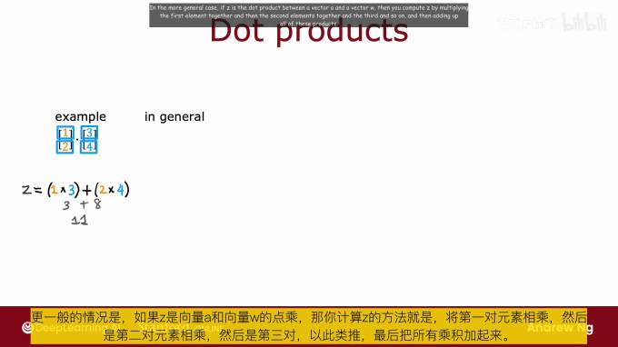
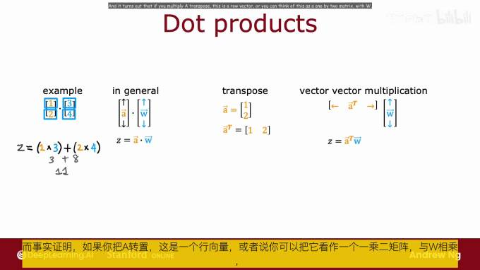
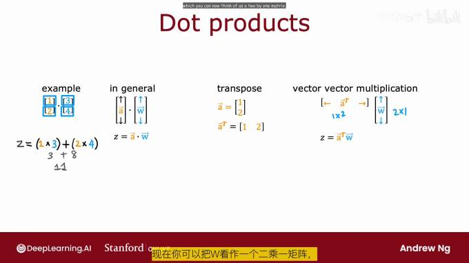
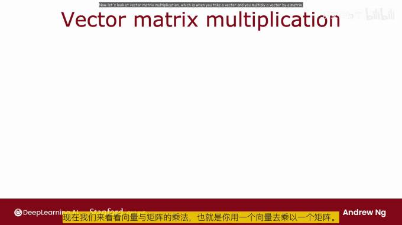
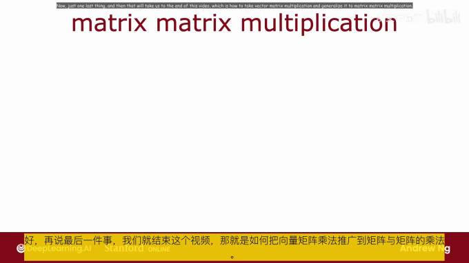

00:03你知道，矩阵就是一个数字块或者说二维数组。
00:08两个矩阵相乘是什么意思呢？
00:13为了逐步理解矩阵乘法，我们先来看看向量之间的点乘是怎么做的。
00:22我们以这个向量（一，二）和这个向量（三，四）的点乘为例。
00:31如果之是这两个向量的点乘，那么计算 z 的方法就是用第一个元素乘以这里的第一个元素。
00:40也就是一乘三，加上第二个元素乘第二个元素，也就是加上二乘四。
00:48所以就是三加八，等于十一。
00:54更一般的情况是，如果 z 是向量 a 和向量 w 的点乘，那你计算 z 的方法就是，将第一对元素相乘，然后是第二对元素相乘，然后是第三对，以此类推，最后把所有乘积加起来。

01:15实际上，点乘还有另一种等价的写法。给定一个向量 A，即写成列向量的（一，二），你可以把它成。
01:30也就是说，你可以通过取 A 的转置，把它从所谓的列向量变成一个行向量。
01:38向量 A 的转置，意思是你把这个向量拿起来，让它的元素像这样横放。
01:48而事实证明，如果你把 A 转置，这是一个行向量，或者说你可以把它看作一个一乘二矩阵，与 W 相乘。

01:59现在你可以把 W 看作一个二乘一矩阵，总结一下，Z 等于 A 与 W 的点乘，等同于 Z 等于 A 转置，也就是 A 被横放，乘以 W。

02:30这对理解矩阵乘法会有帮助，这两种写法只是完全相同的计算的不同表达，最终结果都是乙。
02:41现在我们来看看向量与矩阵的乘法，也就是你用一个向量去乘以一个矩阵。

02:50这里再次给出向量 A（一，二），A 转置就是 A 被横放。
02:58所以，它不再是二乘一矩阵，而是变成一个一乘二矩阵。
03:05现在让我创建一个二乘二矩阵 W，包含这四个元素：三、四、五、六。
03:17如果你想计算大写的 Z 等于 A 转置乘以 W。
03:17如果你想计算大写的 Z 等于 A 转置乘以 W，结果乙会是一个一乘二矩阵。
03:37要计算乙的第一个值，我们取 A 转置，也就是这里的一和二，然后和 W 的第一列相乘。
03:50所以要计算乙的第一个元素，你得到一乘三加二乘四，我们之前见过，结果等于十一。
04:01所以乙的第一个元素是十一。
04:05我们再来算算乙的第二个元素是多少。
04:09你只需重复这个过程，但现在是用 A 转置去乘以 W 的第二列。
04:17做这个计算，你得到一乘五加二乘六，等于五加十二，结果是十七。
04:29所以它等于十七。
04:33因此之等于这个一乘二矩阵，元素为十一和十七。
04:40好，再说最后一件事，我们就结束这个视频，那就是如何把向量矩阵乘法推广到矩阵与矩阵的乘法。

04:53我有一个矩阵 A，包含这四个元素。
04:56第一列是一、二，第二列是负一、负二。
05:04我想知道如何计算 A 转置乘以 W。
05:10和上一张幻灯片不同，这里的 A 是一个矩阵，而不只是一个向量。
05:16但矩阵就是一组不同的向量按列堆叠在一起。
05:22所以我们先来看看 A 的转置是什么。
05:26为了计算 A 的转置，我们要取 A 的各列，和对向量做转置时的情况类似，我们要把这些列逐一拿过来并横放。
05:39所以第一列（，二）变成了第一行（一，二），因为它被横放了。
05:48而第二列（负一，负二）被横放后变成（负一，负二），就像这样。
05:56所以转置一个矩阵的方法就是，取出各列，然后一列接一列地把它们横放。
06:03这样你就得到了 A 的转置。
06:08接下来，我们有这个矩阵 W，我把它写成三、四、五、六。
06:17所以它有一列（三，四）和一列（五，六，我鼓励你用一种方式来看待矩阵，至少这对实现神经网络很有用，就是当你看到一个矩阵时，去想。
06:34而当你看到一个矩阵的转置时，就去想它的行被组合在一起，正如此处用 A 和 A 转置以及 W 所展示的样。
06:46现在我来展示如何计算 A 转置乘以 W。
06:53为了进行这个计算，我把 A 的列记为 A 一和 A 二。
07:01这意味着 A 一转置是 A 转置的第一行，A 二转置是 A 转置的第二行。
07:13然后，和之前一样，我把 W 的列记为 W 一和 W 二。
07:25我们要做的第一件事是，先忽略 A 的第二行，只看 A 的第一行。
07:35我们取这一行（一，二），也就是 A 一转置，用它去乘以 W。
07:44你从上一张幻灯片已经知道怎么做了。
07:48第一个元素是（一，二）与（三，四）的内积或点乘。
07:55所以结果是一乘三加二乘四，等于十一。
08:00然后第二个元素是（一，二），即 A 转置，与（五，六）的内积。
08:12所以是五乘一加六乘二，即五加十二，等于十七。
08:19这样你就得到了 Z 等于 A 转置 W 的第一行。
08:25我们做的就是用 A 一转置去乘以 W。
08:30这正是我们在上一张幻灯片中做过的。
08:34接下来，我们暂时忘掉 A 一，只看 A 二，用 A 二转置去乘以 W。
08:44现在我们算的是 A 二转置乘以 W。
08:49要计算这个，我们先把负一、负二和（三，四）做点乘。
08:57得到负一乘三加负二乘四，结果是负十一。
09:06然后我们还要计算 A 二转置乘以第二列，即负一乘五加负二乘六，结果是负十七。
09:19最终你得到 A 转置乘以 W 等于这个二乘二矩阵。
09:27我们接下来谈谈矩阵乘法的一般形式。
09:35这就是一个向量与矩阵相乘，或者说矩阵与矩阵相乘的例子。
09:42其中涉及很多向量之间的点乘运算，它们以特定的方式排列来逐一构建输出 Z 的各个元素。
09:52我知道这内容很多，但在下个视频里，我们来看看矩阵乘法的一般形式是如何定义的。
10:00希望那能让这一切都变得清晰。